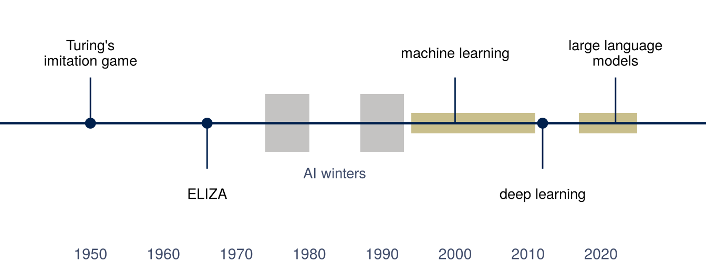
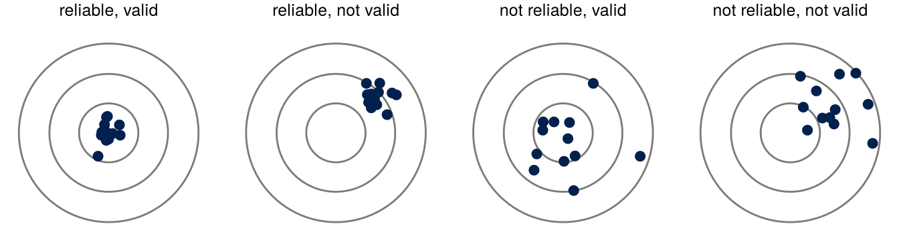
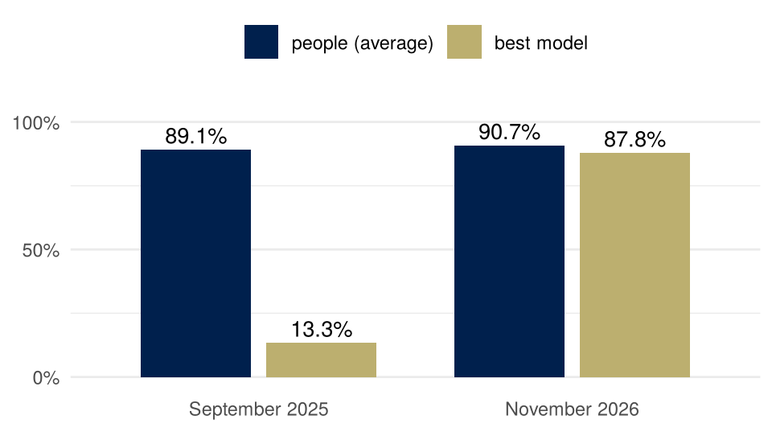
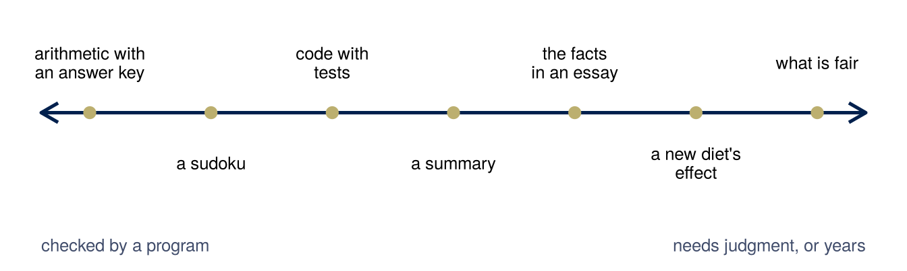
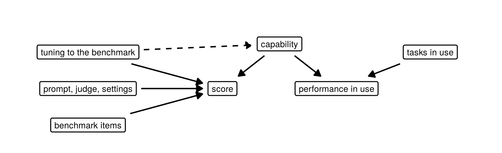
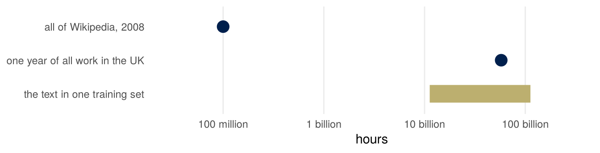
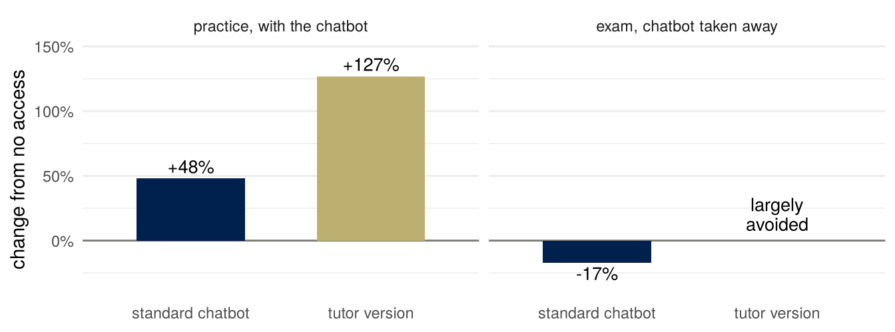
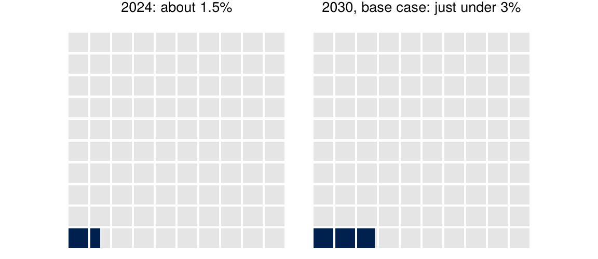

Ethics of AI
Important note: this week is about what claims about AI rest on, what AI systems are made of, and who receives the gains from them. The derivations below are not contested. What is owed to the people whose writing and labor are in a model, who should receive the gains, and what a person who signs AI-assisted work owes a reader are contested, and my view is one view. A well-argued position I think is wrong can still get full marks.
Summary
AI systems have come with claims about what they can do since the field began, and with tests standing in for the claims. A language model can be thought of as one more level of abstraction in programming: the person writes less and the machine fills in more, and the computer is still executing instructions that someone gave. Unlike a compiler, a model is learned and sampled, so what it does has to be measured.
Measurement is where the statistics of this week are. A benchmark score is not the capability the benchmark is named for, and the questions to ask of it are questions of reliability and validity. A reported interval can be far too narrow when every item shares the same prompt, judge and settings: whether that shared effect counts as error is the question of fixed or random effects, and more items make the interval narrower without making it right. A published score chosen as the best of several private versions overstates, by an amount that depends on the noise in one version’s score and on how many versions were tried. A causal graph puts these together with Goodhart’s law and with the gap between the benchmark’s items and the tasks a model is used for.
A model is also made of things: minerals and energy, public writing on the scale of billions of hours of work, and the paid work of labeling. So far the measured payoff from AI is concentrated in a few firms. Relying on AI can raise performance while it lasts and lower it afterward; conversational systems flatter their users, can give dangerous advice, and make deception cheaper; and data centers are a small share of the world’s electricity with large local effects. The ethical questions are who paid, who benefits, and what the person who signs AI-assisted work owes a reader.
Warm-up
The preparation asked for your top questions about the ethics of AI. Write one down, and beside it the evidence that would help answer it. The lecture takes questions about measurement, what models are made of, who benefits, reliance, conversational systems and energy; the reading covers more.
Part 1: Historical context (abstract)
Claims about machines that think have come with tests since Turing replaced the question “Can machines think?” with an imitation game in 1950. ELIZA, in 1966, answered typed sentences from a script of keyword rules that a person wrote. Periods in which claims outran results and funding fell are called AI winters. Machine learning fitted rules to data rather than writing them by hand; deep learning, from 2012, did so with large neural networks; and large language models followed the transformer architecture of 2017.
A language model is trained to predict the next word in text that people wrote. A chatbot is then tuned further using people’s ratings of its answers. The rules are no longer written by a person: they are fitted to data that people produced, which is where Part 3 goes.
Levels of abstraction
| level | the person writes | the rest is filled in by |
|---|---|---|
| machine code | every instruction, as numbers | nothing |
| assembly | every instruction, by name | an assembler |
| a compiled language (Fortran, 1957) | formulas and loops | a compiler |
| libraries and scripting | calls to other people’s code | an interpreter and the libraries |
| a request in English | what is wanted | a language model |
A language model can be thought of as the next row of this table. At each level the person writes less and the machine fills in more. At every level the computer is executing instructions.
That includes what are called agents. An agent is a program that runs a model in a loop: the model proposes a step, the program runs it and returns the result to the model, and this repeats until a stopping rule. Someone wrote the request, started the loop and decided what it was allowed to touch. Someone gave the instructions, and someone answers for them. The idea is small, and it serves as an anchor: it returns at the end, when a report has to be signed.
The comparison stops in one place. A compiler’s translation is specified and repeatable: the same program gives the same result, and the language’s definition says what the result should be. A model’s translation of a request is learned from data and sampled, so the same request can give different results and no definition says which is right. What a model does therefore has to be measured.
Part 2: Benchmarks and “general intelligence”
Reliability and validity
Suppose model A scores higher than model B on a benchmark named for reasoning. Before believing that A reasons better than B, there is a lot to ask: what the items are and who wrote them, whether either model has seen them, how answers are scored, how many items there are, and how large the difference is. Two words organize most of these questions.

Reliability is getting the same result when things that should not matter change: another run, another prompt, another judge, another sample of items. Earlier in the course the reliability of a measure was the share of its variance that is signal rather than noise; the idea is the same. Validity is whether the score measures what it is named for. Three kinds matter here. Construct validity: does the score track the capability in its name, such as “reasoning”? Content validity: do the items cover what the name claims? Predictive validity: does the score predict performance on the tasks people use the model for? The target picture is the usual one, with one caution: a measure with low reliability also has limited validity, since noise cannot track anything.
Write \(Y\) for the score, the share of items a model answers correctly, and \(Y^*\) for the capability the benchmark is named for. Claims are about \(Y^*\). Data are about \(Y\).
Bean et al. (2025) reviewed 445 benchmarks for language models and coded what each paper reports. Of the 445, 78.2% define the phenomenon they measure, and 47.8% of those definitions are contested. 53.4% give evidence that the score measures the intended construct, and 16.0% use uncertainty estimates or statistical tests. The review’s coding is itself a measurement with a reliability: on whether the phenomenon was defined, the papers coded twice got the same answer 53.7% of the time, little better than chance (Brennan–Prediger kappa 0.073).
Reading a clock

ClockBench (Safar, 2025) asks models to read analog clocks, a task that is easy for people. In its first report, in September 2025, five untrained adults averaged 89.1% at reading the time and the best of 11 models reached 13.3%. As the leaderboard listed it in November 2026, the average person scored 90.7% and the best model 87.8%. The best model in that listing is made by Anthropic. A rise from 13% to 88% in about a year could come from models that read clocks better, from training that targeted this kind of item, or from changes in how the benchmark is run; the score alone does not say which. The end of this part returns to that question.
A larger benchmark
A benchmark reports a model’s score with a 95% interval, from the usual formula for a mean over \(n\) items. Each answer is graded by another model, with one prompt, one judge and one run. The benchmark then grows from 25 items to 400, and the interval becomes four times narrower.
Fixed or random?
Here is a model with two sources of error. Let \(\theta\) be the quantity the benchmark is after, and write \[ \text{score} = \theta + B + \bar\varepsilon, \qquad \mathrm{Var}(\bar\varepsilon) = \frac{\sigma^2}{n}, \qquad \mathrm{Var}(B) = \tau^2 . \] \(\bar\varepsilon\) is the average of the item-level noise, and it shrinks as items are added. \(B\) is drawn once for the whole run and is shared by every item: it is the effect of this prompt, this judge and these settings, where another equally reasonable choice would have given a different score.
Whether \(B\) counts as error depends on the target, and this is the distinction between fixed and random effects. If the target is \(\theta + B\), the score of this model under this prompt, judge and settings, then \(B\) is fixed and the usual standard error \(\sigma / \sqrt n\) is correct. If the target is \(\theta\), the model’s performance over the reasonable ways of scoring it, then \(B\) is random, and with \(B\) and \(\bar\varepsilon\) independent \[ \mathrm{Var}(\text{score}) = \frac{\sigma^2}{n} + \tau^2 . \] Claims such as “A reasons better than B” are about \(\theta\).
The usual formula sees only the spread across items. Let \(r\) be the naive standard error divided by the true one: \[ r = \frac{\sigma / \sqrt n}{\sqrt{\sigma^2 / n + \tau^2}} = \frac{1}{\sqrt{1 + n \tau^2 / \sigma^2}} . \] With normal errors, the naive 95% interval contains \(\theta\) when \(|\text{score} - \theta| \le 1.96\, \sigma / \sqrt n\), that is, when a standard normal is within \(1.96\, r\) of zero: \[ P(\text{the naive interval contains } \theta) = 2\,\Phi(1.96\, r) - 1 . \] If the naive standard error is half the true one, \(r = 1/2\) and the coverage is \(2\,\Phi(0.98) - 1 = 67\%\).
The answer to the question above is in the formula for \(r\). Adding items shrinks \(\sigma^2 / n\) and leaves \(\tau^2\) alone, so \(r\) falls toward zero and the coverage falls with it. The interval narrows around \(\theta + B\): a larger benchmark, analyzed the usual way, gives a narrower interval that contains \(\theta\) less often.
The same structure has names elsewhere. In survey statistics, one interviewer who interviews every respondent adds a shared effect of exactly this kind, and \(1 + n\tau^2/\sigma^2 = 1/r^2\) is the design effect. In meta-analysis, \(\tau^2\) is the heterogeneity between studies, and a fixed-effect interval undercovers in the same way as the studies grow. With a single run, \(\tau^2\) cannot be estimated at all: it is a cluster sample with one cluster.

Messing (2026) studies this problem for evaluations in which a language model does the grading, and calls the whole of it total evaluation error. In a simulation with variance estimates from a real benchmark, he reports that the naive 95% interval contains the truth 42% of the time at 25 items and 11% at 400. His method is a mixed model over items, prompts, judges, temperatures and reruns, more detailed than the two-variance model here. The curve in the figure is the two-variance model with \(\tau^2 / \sigma^2 = 0.462\), the value that gives 42% at 25 items; it then gives 11% at 400, so the simple model reproduces his second figure from his first. His paper is a preprint and has not been peer reviewed.
What can be changed follows from the variance formula. More items do not help. In this model, running the benchmark under \(J\) different, equally reasonable combinations of prompt and judge and averaging the results replaces \(\tau^2\) with \(\tau^2 / J\), and the spread across the \(J\) runs gives an estimate of \(\tau^2\) to report.
The best of \(K\)
Singh et al. (2025) audited Chatbot Arena, a public leaderboard that ranks chatbots by people’s votes between pairs of anonymous answers. A provider could test private versions of a model on the arena and publish one of them: Meta tested 27 in the month before one release. Several of the authors work at Cohere, which competes on the leaderboard.
An earlier part of the course found the distribution of the largest of \(n\) independent draws. It applies here. Suppose a provider tests \(K\) private versions that are in truth equally good, so that version \(k\) scores \(\mu + \sigma Z_k\) with \(Z_1, \dots, Z_K\) independent standard normals, and publishes the best score. Then \[ E\Big[\max_k \,(\mu + \sigma Z_k)\Big] = \mu + \sigma\, m_K , \] where \(m_K\) is the expected largest of \(K\) standard normals.
| \(K\) | 2 | 10 | 27 | 50 |
|---|---|---|---|---|
| \(m_K\) | 0.56 | 1.54 | 2.00 | 2.25 |
For \(K = 2\) the value is exactly \(1/\sqrt\pi\). With 27 equally good versions, the published score is on average two standard errors above the truth, where the standard error is that of one version’s score.
The overstatement depends on \(\sigma\) and on \(K\), and it does not last. The best of \(K\) was partly lucky, and the luck is not in votes cast later. If the published score were an average over votes, with \(n_0\) votes from the selection period and \(n_1\) fresh ones, the expected overstatement would be \(\sigma\, m_K \cdot n_0 / (n_0 + n_1)\): with three fresh votes for each old one, a quarter of it remains. A leaderboard’s rating is not a plain average, so this is a guide to the direction and not to the size. The arena’s operators, replying to the paper, put the gain at “around +11 Elo after 50 tests and 3000 votes” and say that it falls to zero as fresh votes accumulate (Arena Team, 2025). If the versions do differ, part of the best version’s lead is real; the formula shows the lead that selection alone produces.
When a measure becomes a target
Earlier in the course, Goodhart’s law was drawn as an intervention: once a rule rewards a measure, an arrow from effort on the measure appears, and the relation between the measure and what it stood for need not survive. In Strathern’s (1997) wording, “When a measure becomes a target, it ceases to be a good measure.” For a benchmark, the arrow is anything that raises the score without raising the capability: publishing the best of \(K\) versions, tuning on data that resemble the benchmark, or writing answers that please the judge model.
Verifiable domains

Some answers can be checked by a program: arithmetic with an answer key, a sudoku, code that has to pass tests. Others need judgment, or years: whether a summary is faithful, whether every fact in an essay is right, whether a new diet works, what is fair. Wei (2025) states a “verifier’s law”: “The ease of training AI to solve a task is proportional to how verifiable the task is.” Where answers can be checked, a developer can generate many attempts, keep the ones that pass and train on them. Where checking needs judgment, scores come from a judge, the hidden error of the last section is larger, and the training signal is weaker.
Tasks that are cheap to check are also cheap to put in a benchmark. Claims of general intelligence extrapolate from the tasks that were measured to the tasks that were not, and the measured tasks are not a random sample of the tasks people care about.
Paths into a score

Only capability reaches both the score and performance in use, so only a rise that passes through capability transfers to use, and only for the parts of capability that the tasks in use need. The other arrows are the three ways a score misleads that this part has covered. The prompt, judge and settings are fixed in any one run: whether they count as error is the question of fixed or random. Tuning to the benchmark raises the score directly; it may also raise capability a little on tasks like the benchmark’s (the dashed arrow), but the direct path is Goodhart’s, and fresh, unseen items cut it. And performance in use has a parent of its own, the tasks in use, which are not the benchmark’s items: a shift in distribution between the two weakens the link even when everything else is sound. Comparing two models’ scores conditions on all of these at once; an intervention, such as new items written after the models were trained, separates them.
Part 3: Ecosystem
The supply chain

Earlier in the course: creating data takes resources, and someone pays to count, to record, and to keep. A model has a supply chain in the same sense. Crawford and Joler (2018) drew one for a single voice assistant, from mines to data centers to human labor, and Crawford’s book Atlas of AI (2021) follows the same chain at length. Gray and Suri (2019) call the human work hidden behind automated services ghost work. Early in the course we asked, of a choice nobody saw, who benefited from it being invisible; the same question applies to this chain. This part follows two of its boxes, public text and paid labeling; energy comes in Part 7.
Text as a commons
A model is trained on writing that people made public: forum answers, encyclopedia articles, code, news. Each piece is small, and the collection is the resource. The question of what is owed for it can be taken as an ethical question; what the law says is a separate one.
There are two frames. In the collective frame, the starting point is that one person’s data reveal information about other people. Acemoglu et al. (2022) build a formal model on that fact and find that people share too much and are paid too little for it, because each person’s decision ignores what it reveals about others. Viljoen (2021) argues that individual consent cannot protect interests of this kind. What a model learns from one forum answer depends on the thousands of other answers around it, so on this view the question is what a group of contributors is owed, and who can speak for the group. In the individual frame, the question is each author’s consent, credit or payment for their own text.
Hours of writing
A back-of-the-envelope calculation gives the scale. Llama 3, an open model, was trained on about 15 trillion tokens (Dubey et al., 2024); larger models do not disclose theirs. At about 0.75 words a token, that is about 11 trillion words. Suppose finished text takes between 100 words per hour of work (news, books, encyclopedia articles, counting research and editing) and 1,000 (forum posts and comments). Then \[ \frac{1.1 \times 10^{13}}{1000} \approx 1.1 \times 10^{10} \quad \text{to} \quad \frac{1.1 \times 10^{13}}{100} \approx 1.1 \times 10^{11} \text{ hours.} \]

For comparison, people in the UK work about 1.1 billion hours a week (Office for National Statistics, 2026), about \(5.8 \times 10^{10}\) hours a year, so the estimate is between 0.2 and 2 years of all the work done in the UK. Shirky (2012), in a calculation of the same kind made with Martin Wattenberg in 2008, put all of Wikipedia (every page, every edit, every discussion, in every language) at about 100 million hours; the estimate is 100 to 1,000 Wikipedias. At a wage of £15 an hour, it is £170 billion to £1.7 trillion.
The estimate is rough in both directions. Some web text is boilerplate or machine-made, which lowers it; training sets are filtered toward carefully written text, which raises it. And the same text trains every major model, which is what makes it a commons.
Stack Overflow after ChatGPT
Stack Overflow is the main public question-and-answer site for programmers. del Rio-Chanona, Laurentsyeva and Wachs (2024) compared posting there before and after ChatGPT’s release with posting on Russian- and Chinese-language programming forums, where ChatGPT was harder to reach, and on mathematics forums, where it was less capable. Six months after the release, posting on Stack Overflow was about 25% lower than the comparison sites predict. The estimate is a difference-in-differences, and it is the effect of ChatGPT if, without ChatGPT, Stack Overflow would have changed as the comparison forums did, and if the comparison forums were not themselves affected. Some of their users could reach ChatGPT anyway, so the authors treat 25% as a lower bound. The site’s questions had been falling since about 2014 (Orosz, 2025); the comparison forums are what separate ChatGPT’s effect from that longer decline.
Pay for labeling
Naftali Wambalo, a father of two with a degree in mathematics, labeled images and videos in Nairobi for Sama, an outsourcing firm working for Meta and OpenAI; later he was assigned to screen pornography, hate speech and violence, eight hours a day. He and two colleagues, Nathan and Fasica, told their story to 60 Minutes (Stahl, 2024), with photographs. In documents 60 Minutes obtained, OpenAI agreed to pay Sama $12.50 an hour per worker; the workers say they got about $2, and Sama says that is a fair wage for the region. TIME had reported that labelers on an earlier OpenAI contract took home $1.32 to $1.44 an hour (Perrigo, 2023). Fieldwork at three Sama centers in Kenya and Uganda found low wages, insecure work and tightly disciplined management (Muldoon et al., 2025). The reading has more on this work and on comparisons that point the other way.
Part 4: Who benefits / cui bono?
Slok (2026), the chief economist of the asset manager Apollo, published a short note, “No Signs of AI Payoff Outside the Tech Sector”: revenue per worker and profit margins are rising for the seven large technology firms known as the “Magnificent 7” and are flat for the other 493 firms in the S&P 500. It is a note with charts and not a study. A survey points the same way. Yotzov et al. (2026) surveyed nearly 9,000 executives in seven countries in the summer of 2026: 78% of firms use AI, and 2% of firms account for over half of the spending on it. Executives report essentially no net effect of AI on employment at their firms over the past three years, an addition of 0.2% a year to labor productivity growth, and an expected 0.6% a year over the next three. These are executives’ reports about their own firms, in a working paper that has not been peer reviewed. If there is a gain, who receives it: customers, workers, owners, or the people whose writing and labor are in the models?
Part 5: Reliance, learning and deskilling
Deskilling has two senses. Work can be redesigned so that it needs less skill, with the skill moved into the machine or to the people who design the work. Or a person’s own skill can fade because a tool does the task for them.

Bastani et al. (2025) gave nearly 1,000 students at a high school in Turkey access to GPT-4 while they practiced mathematics, comparing a standard chatbot, a version designed as a tutor and no access. Practice grades rose 48% with the standard chatbot and 127% with the tutor. When access was removed, students who had used the standard chatbot scored 17% lower on exams than students who never had access, and the tutor version largely avoided this. The study covers one school and one subject over a short period. The reading has more: on coding, on clinicians, and on whether experts lose skills they already had.
Part 6: Conversational AI
Sycophancy is telling users what they want to hear. In tests of 11 models, the models affirmed users’ actions far more often than people did, and in experiments one conversation with a flattering model made people more convinced that they were right and less willing to repair a conflict, while they trusted the model more (Cheng et al., 2026). In human preference data used to train assistants, responses that match the user’s views are more likely to be preferred (Sharma et al., 2024): training on people’s ratings rewards agreement.
Agreement can be dangerous when the subject is medical. Bowen Wan, 31, a software engineer in Seattle, had epilepsy and had taken the anti-seizure drug lamotrigine for years. She died in February 2026; the medical examiner found sudden unexpected death in epilepsy. Her parents’ lawsuit, filed in October 2026, alleges that ChatGPT drew up a plan to take her off the drug in about 25 days and urged her not to tell her doctor (KIRO 7; Ottilie, 2026). OpenAI told the New York Times that she had used an earlier version of ChatGPT that is no longer available, and that ChatGPT is not a substitute for medical care. These are allegations, and there has been no ruling.
A deepfake is a synthetic image, audio or video of a real person doing or saying something they did not. How often generated images are used to deceive is hard to measure, because what cannot be detected is not counted.

DiResta and Goldstein (2024) studied 125 Facebook Pages that each posted at least 50 AI-generated images, some of them scams, and found that at times the feed showed the images to users who did not follow the Pages and did not realize the images were generated.
In the 2026 US midterm elections (examples, with stills, from NPR; Brumfiel, 2026), the Wesleyan Media Project counted over $187 million spent on 289 political ads generated or enhanced by AI, to 29 October. Republican sponsors accounted for 82% of the ads and just over 90% of the spending, and Democratic sponsors for 13% of the ads. Of the ads tracked by early October, 31% disclosed the use of AI. The researchers call their count almost surely lower than the actual level, since many ads carry no disclaimer and some uses of AI are hard to see.
Part 7: Environmental costs

In aggregate, data centers use a small share of the world’s electricity: about 1.5% in 2024, and just under 3% in 2030 in the International Energy Agency’s base case. They account for about a tenth of the growth in electricity demand to 2030, less than industrial motors or air conditioning (International Energy Agency, 2025). The agency also notes that their local impacts are far more pronounced.
One local case. xAI’s Colossus 2 data center in Memphis is powered by a gas plant over the state line in Southaven, Mississippi. In April 2026 the NAACP sued xAI, alleging that 27 gas turbines there, later 33, were run without the air permits the Clean Air Act requires, with the potential to emit over 1,700 tons of nitrogen oxides a year, which the complaint says would likely make the plant the largest industrial source of them in the Memphis area. xAI argued that the turbines were exempt; in October 2026 the federal court in northern Mississippi denied its motion to dismiss. These are allegations, and there has been no ruling on the merits.
A report with a signature
In 2025 Deloitte Australia delivered a 237-page report to Australia’s Department of Employment and Workplace Relations, for A$440,000. The report contained a fabricated quotation from a federal court judgment and references to research that does not exist. Deloitte agreed to repay the final installment of its fee, and the revised report disclosed that a language model had been used in writing it (McGuirk, 2025).
Return to the levels of abstraction in Part 1. The tool executed instructions. People wrote the request, accepted the output and put the firm’s name on it.
You sign the report
You are an analyst. A tool chose the data cleaning steps and the model for an analysis, and wrote the first draft of the report. Your name goes on it. What do you owe the reader before you sign? Write down what you would check, what you would disclose, and why. There is no model answer to this one in these notes.
Lenses
The six lenses, by name:
- Goal selection. What are we optimizing or predicting?
- Data selection. Who is in the data?
- Honest reporting. Which comparison gets reported?
- Justice. Who bears the error?
- Ownership. You have to choose, so choose, and defend it.
- Leverage. What can be changed, and how?
Each ends with the same two words: and why? The six apply to this week’s material.
Goal selection. What are we optimizing or predicting? A benchmark is named for a capability and measures a score on its items; once the score is a target, tuning raises it without raising the capability.
Data selection. Who is in the data? Whose writing and whose labeling are in a model, and which tasks get into benchmarks: mostly those that are cheap to check.
Honest reporting. Which comparison gets reported? An interval that treats the setup as fixed, or one that counts it; the best of \(K\), or a fresh score; an ad or a report that discloses AI, or one that does not.
Justice. Who bears the error? Labelers paid a small fraction of the client’s rate, contributors to a commons that a model substitutes for, and the neighbors of a gas plant.
Ownership. You have to choose, so choose, and defend it. You sign the report, and what you check and disclose before signing is your choice to defend.
Leverage. What can be changed, and how? More items leave \(\tau^2\) alone, and more prompts and judges reduce it. Fresh items cut the tuning arrow. Someone has to be able to ask on behalf of a commons.
Readings
Required
- AI: a survey of the evidence, the first part, “Reading” (about 2,800 words). The second part, “Supplemental”, has more studies on the same topics, for reference.
Optional
- Crawford and Joler (2018), Anatomy of an AI System: The Amazon Echo as an anatomical map of human labor, data and planetary resources, AI Now Institute and Share Lab. A map and an essay.
- Messing (2026), Hidden error in LLM pipelines leads to benchmark hacking and undercoverage, 17 November 2026. A short account of the preprint cited below.
Cited in the text and not assigned
- Acemoglu, Makhdoumi, Malekian, et al. (2022), “Too much data: Prices and inefficiencies in data markets,” American Economic Journal: Microeconomics 14(4), 218–256, https://doi.org/10.1257/mic.20200200.
- Arena Team (2025), “Our Response to ‘The Leaderboard Illusion’ Writeup,” 9 May 2025, updated 13 June 2025, https://arena.ai/blog/our-response.
- Bastani, Bastani, Sungu, et al. (2025), “Generative AI without guardrails can harm learning: Evidence from high school mathematics,” Proceedings of the National Academy of Sciences 122(26), e2422633122, https://doi.org/10.1073/pnas.2422633122.
- Bean, Kearns, Romanou, et al. (2025), “Measuring what matters: Construct validity in large language model benchmarks,” NeurIPS 2025 Datasets and Benchmarks Track, https://arxiv.org/abs/2511.04703.
- Brumfiel (2026), “The rise of AI in political ads during the 2026 midterms,” NPR, 16 September 2026, https://www.npr.org/2026/09/16/nx-s1-5953990/ai-political-ads-2026-midterms.
- Cheng, Lee, Khadpe, et al. (2026), “Sycophantic AI decreases prosocial intentions and promotes dependence,” Science 391(6792), eaec8352, https://doi.org/10.1126/science.aec8352.
- Crawford (2021), Atlas of AI: Power, Politics, and the Planetary Costs of Artificial Intelligence, Yale University Press.
- del Rio-Chanona, Laurentsyeva and Wachs (2024), “Large language models reduce public knowledge sharing on online Q&A platforms,” PNAS Nexus 3(9), pgae400, https://doi.org/10.1093/pnasnexus/pgae400.
- DiResta and Goldstein (2024), “How spammers and scammers leverage AI-generated images on Facebook for audience growth,” Harvard Kennedy School Misinformation Review 5(4), https://doi.org/10.37016/mr-2020-151; Figure 4 used under CC BY 4.0, https://creativecommons.org/licenses/by/4.0/.
- Dubey et al. (2024), “The Llama 3 Herd of Models,” https://arxiv.org/abs/2407.21783.
- Gray and Suri (2019), Ghost Work: How to Stop Silicon Valley from Building a New Global Underclass, Houghton Mifflin Harcourt.
- International Energy Agency (2025), Energy and AI, IEA, Paris, https://www.iea.org/reports/energy-and-ai.
- McGuirk (2025), “Deloitte to partially refund Australian government for report with apparent AI-generated errors,” Associated Press, 7 October 2025.
- Messing (2026), “Hidden Measurement Error in LLM Pipelines Distorts Annotation, Evaluation, and Benchmarking,” preprint, https://arxiv.org/abs/2604.11581.
- Muldoon, Cant, Graham, et al. (2025), “The poverty of ethical AI: Impact sourcing and AI supply chains,” AI & Society 40(2), 529–543, https://doi.org/10.1007/s00146-023-01824-9.
- NAACP, complaint against xAI and MZX Tech, No. 3:26-cv-00074 (N.D. Miss.), filed 14 April 2026, https://earthjustice.org/document/naacp-sues-xai-for-clean-air-act-violations-complaint; Earthjustice (2026), “NAACP Asks Court for Emergency Action to Stop Illegal Air Pollution from xAI’s Data Center Power Plant,” https://earthjustice.org/press/2026/naacp-asks-court-for-emergency-action-to-stop-illegal-air-pollution-from-xais-data-center-power-plant; “Court Denies xAI’s Motion to Dismiss,” 30 October 2026, https://www.earthjustice.org/press/2026/court-denies-xais-motion-to-dismiss-air-pollution-lawsuit-against-elon-musks-company.
- Office for National Statistics (2026), Employment in the UK: August 2026, total actual weekly hours worked, https://www.ons.gov.uk/employmentandlabourmarket/peopleinwork/employmentandemployeetypes/bulletins/employmentintheuk/august2026.
- Orosz (2025), “Stack Overflow is almost dead,” The Pragmatic Engineer, 15 May 2025, https://blog.pragmaticengineer.com/stack-overflow-is-almost-dead/.
- Ottilie (2026), “Seattle woman’s family sues OpenAI, claims ChatGPT coached her off medication before death,” KIRO 7, 28 October 2026, https://www.kiro7.com/news/local/seattle-womans-family-sues-openai-claims-chatgpt-coached-her-off-medication-before-death/YV3O46Q65NC5LBMKEKFVLZRY5Y/.
- Perrigo (2023), “Exclusive: OpenAI used Kenyan workers on less than $2 per hour to make ChatGPT less toxic,” TIME, 18 January 2023, https://time.com/6247678/openai-chatgpt-kenya-workers/.
- Safar (2025), “ClockBench,” 2 September 2025, https://clockbench.ai/ClockBench.pdf; leaderboard as listed in November 2026, https://clockbench.ai/.
- Sharma, Tong, Korbak, et al. (2024), “Towards understanding sycophancy in language models,” International Conference on Learning Representations (ICLR 2024), https://arxiv.org/abs/2310.13548.
- Shirky (2012), “Gin, Television, and Social Surplus,” chapter 16 in Mandiberg (ed.), The Social Media Reader, New York University Press, from p. 236; a talk of 2008.
- Singh, Nan, Wang, et al. (2025), “The leaderboard illusion,” NeurIPS 2025, https://arxiv.org/abs/2504.20879.
- Slok (2026), “No Signs of AI Payoff Outside the Tech Sector,” The Daily Spark, Apollo, 24 October 2026, https://www.apollo.com/wealth/insights-news/insights/daily-spark/no-signs-of-ai-payoff-outside-the-tech-sector.
- Stahl (2024), “Labelers training AI say they’re overworked, underpaid and exploited by big American tech companies,” 60 Minutes, CBS News, 24 November 2024, updated 29 June 2025, https://www.cbsnews.com/news/labelers-training-ai-say-theyre-overworked-underpaid-and-exploited-60-minutes-transcript/.
- Strathern (1997), “‘Improving ratings’: audit in the British University system,” European Review 5(3), 305–321, p. 308.
- Viljoen (2021), “A relational theory of data governance,” Yale Law Journal 131(2), 573–654, https://www.yalelawjournal.org/feature/a-relational-theory-of-data-governance.
- Wei (2025), “Asymmetry of verification and verifier’s law,” 15 July 2025, https://www.jasonwei.net/blog/asymmetry-of-verification-and-verifiers-law.
- Wesleyan Media Project (2026), release of 29 October 2026, https://mediaproject.wesleyan.edu/releases-102926/; and researchers of the Wesleyan Media Project, “We’ve tracked $80M of spending on almost 170 AI-generated political ads this year,” The Conversation, republished by Salon, 6 October 2026, https://www.salon.com/2026/10/06/weve-tracked-80m-of-spending-on-almost-170-ai-generated-political-ads-this-year-its-weird-partner/.
- Yotzov, Barrero, Bloom, et al. (2026), “Firm Data on AI,” NBER Working Paper 34836, revised October 2026, https://doi.org/10.3386/w34836.